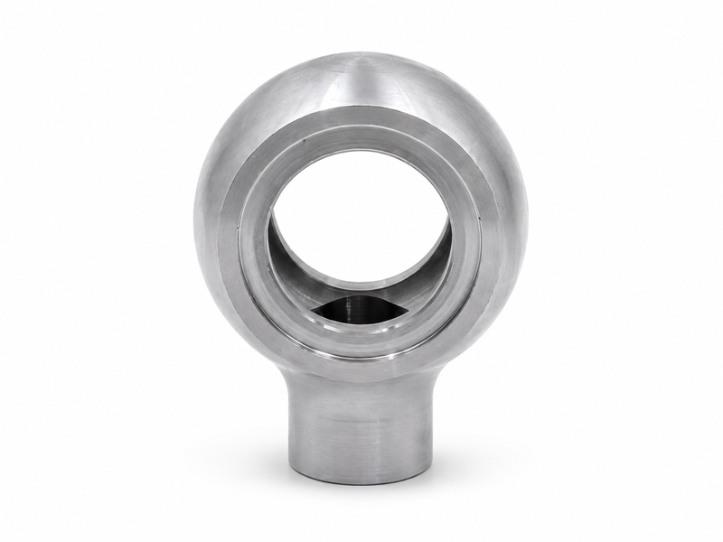
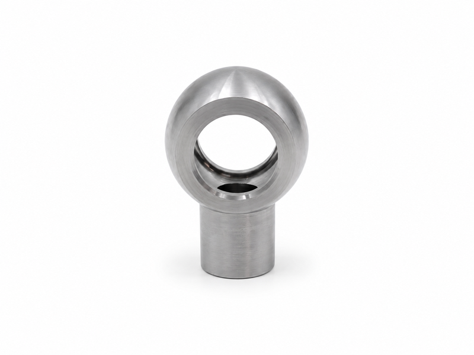
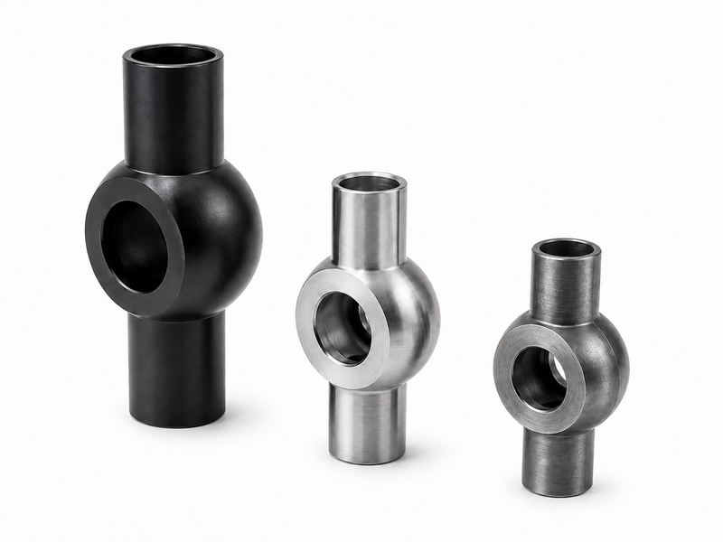
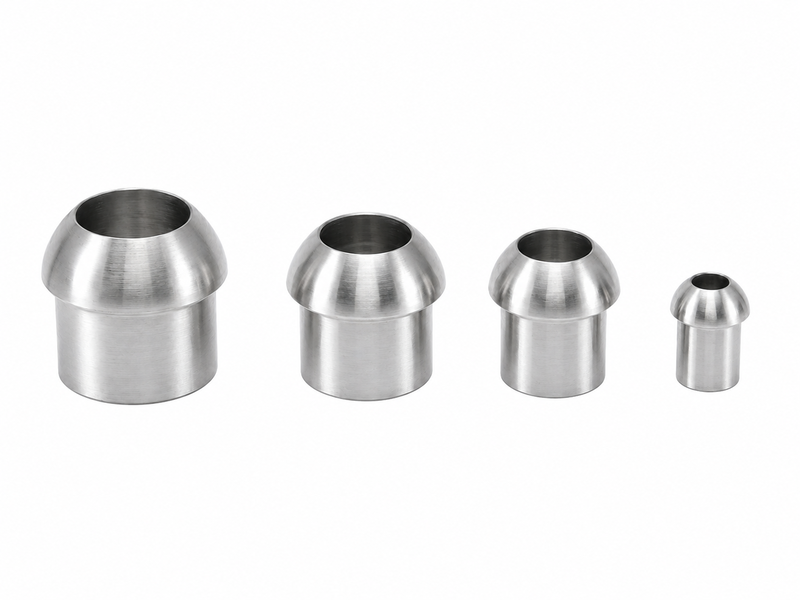

Hydraulic Cylinder Components





Hydraulic cylinder parts include pistons, glands, rod ends, clevises, bushings, welding heads, ports and other components used in hydraulic cylinders. These parts must withstand pressure, sliding movement, mechanical load and long-term wear. Accurate machining, suitable material selection and proper surface treatment are important for cylinder sealing, guiding and connection performance. Hydraulic cylinder parts are used in construction machinery, lifting equipment, agricultural machines, industrial presses and custom hydraulic actuator systems.
| Product Type | hydraulic cylinder parts, piston components, rod ends and welded cylinder fittings |
| Part Options | piston, gland, clevis, bushing, eye bracket, welded port and threaded connector |
| Material Options | carbon steel, alloy steel, stainless steel, bronze or aluminum bronze |
| Surface Treatment | hard chrome, black oxide, zinc plating, phosphating, painting or polishing |
| Manufacturing Method | CNC turning, milling, drilling, grinding, welding and heat treatment |
| Tolerance Control | sealing grooves, bearing fits, thread accuracy and concentricity inspection |
| Size Range | customized according to cylinder bore, rod diameter and installation design |
| Seal Compatibility | groove dimensions can be matched with standard hydraulic sealing systems |
| Inspection Items | hardness, dimension, surface roughness, thread gauge and visual quality |
| Customization | available according to drawings, samples, load requirements and assembly position |
Precision-machined sealing grooves help support stable cylinder sealing performance
High-strength materials withstand hydraulic pressure, mechanical load and repeated movement
Wear-resistant bushings and guide components improve cylinder service life
Custom rod ends and clevises provide reliable connection to machine structures
Welded ports and heads can be designed according to oil flow and cylinder layout
Surface roughness control helps reduce seal wear and leakage risk
Heat treatment options improve hardness, toughness and fatigue resistance
Accurate thread machining supports secure assembly with hoses, fittings and valves
Custom machining supports both standard replacement and special cylinder projects
Dimensional inspection helps ensure compatibility with existing cylinder assemblies
Multiple material options allow balance between wear resistance, cost and corrosion performance
Stable batch production supports OEM cylinder manufacturers and repair suppliers
Correctly machined piston grooves help maintain seal compression and reduce bypass leakage inside the cylinder.
Rod eye and clevis components must match pin size, load direction and installation clearance.
Bronze or composite bushings can be selected when guiding performance and wear resistance are critical.
For welded cylinder parts, fixture control helps maintain port angle and mounting consistency.
Tell us your requirements and we'll provide a detailed quote within 24 hours.